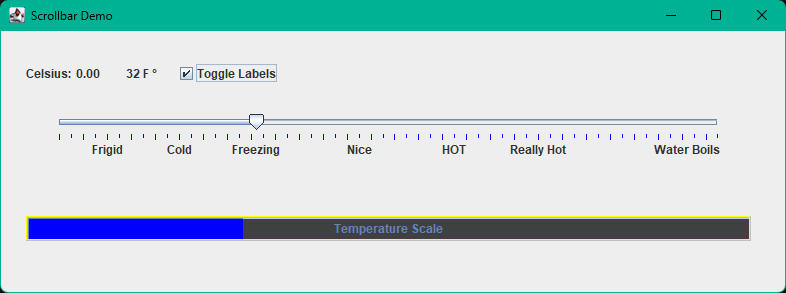

Slider and Progress Bar#
This Java program demonstrates the interaction between GUI components—specifically JSlider, JProgressBar, and JCheckBox—to visually represent temperature conversion from Fahrenheit to Celsius. Users move a slider to choose a temperature, see the Celsius equivalent, and view progress on a bar. They can also toggle descriptive labels on the slider using a checkbox.
Key Component Properties:#
JSlider:#
minValue,maxValue: Sets the minimum and maximum selectable values.setMajorTickSpacing,setMinorTickSpacing: Control tick mark intervals.setPaintTicks(true): Displays tick marks.setPaintLabels(true): Enables or disables label display.setLabelTable: Allows custom descriptive labels at specific values.
JProgressBar:#
Visual indicator of progress within a range (set by minimum and maximum).
setStringPainted(true): Displays custom text within the progress bar.setValue: Updates current progress visually.
JCheckBox:#
A toggle control allowing users to enable or disable features (in this case, descriptive slider labels).
Action listeners respond immediately to user interaction, updating the interface dynamically.
Build Sequence Explanation:#
The program’s GUI elements are built in a deliberate sequence to ensure correct layout and functionality:
JFrame setup: Initializes the window size, layout, and default behaviors first since all components rely on this container.
JLabel setup: Labels must exist before dynamic updates happen; they’re essential for displaying temperature values clearly.
JCheckBox setup: Created before the slider because it controls slider labeling—initializing it first ensures it’s ready for interaction.
JSlider setup: Relies on checkbox functionality for label toggling; therefore, it must follow checkbox initialization.
JProgressBar setup: Set up last, as it reflects the slider’s current value dynamically, depending upon previous components’ interactions.
This sequence ensures each component has the required context and dependencies met, providing smooth, error-free interactions.
Example Code#


#
/*
Developer: James Goudy
*/
package j2x_slider;
import java.awt.Color;
import java.awt.event.ActionEvent;
import java.util.Hashtable;
import javax.swing.BorderFactory;
import javax.swing.JCheckBox;
import javax.swing.JFrame;
import javax.swing.JLabel;
import javax.swing.JProgressBar;
import javax.swing.JSlider;
class ScrollBarDemo {
// JFrame and JFrame Components
JFrame myFrame;
JLabel lblTempDesc;
JLabel lblTempCon;
JLabel lblSliderValue;
JSlider sb;
JProgressBar pb;
JCheckBox checkBox;
// slider max and min values
int minValue;
int maxValue;
// constructor
public ScrollBarDemo()
{
// slider max and min values
minValue = -50;
maxValue = 225;
// helper functions
setupFrame();
setupLabel();
setupCheckBox();
setupSlider();
setupProgressBar();
// better to put set visible here
// forces a redraw to all components
myFrame.setVisible(true);
// setup initial vaues
convertFtoC();
getFarenheit();
}
private void setupFrame()
{
// create frame
myFrame = new JFrame("Scrollbar Demo");
// set frame properties
myFrame.setLayout(null);
myFrame.setDefaultCloseOperation(JFrame.EXIT_ON_CLOSE);
myFrame.setSize(800, 300);
myFrame.setLocationRelativeTo(null);
}
private void setupLabel()
{
// remember setbounds(x position, y position, width, height)
// create temp description label
lblTempDesc = new JLabel("Celsius: ");
lblTempDesc.setBounds(25, 30, 50, 25);
// create temp conversion label
lblTempCon = new JLabel("0.0");
lblTempCon.setBounds(75, 30, 50, 25);
// create slider value label
lblSliderValue = new JLabel("0.0");
lblSliderValue.setBounds(125, 30, 50, 25);
// add the labels to the form
myFrame.add(lblTempDesc);
myFrame.add(lblTempCon);
myFrame.add(lblSliderValue);
}
private void setupCheckBox()
{
// create the checkbox
checkBox = new JCheckBox("Toggle Labels");
// set location and dimensions
checkBox.setBounds(175, 30, 150, 25);
// add a listener to check if the box is checked
checkBox.addActionListener((ActionEvent e) -> {
updateSliderLabels();
});
// add checkbox to frame
myFrame.add(checkBox);
}
private void setupSlider()
{
// create slider
// not that the max, min, and value could be set separately
sb = new JSlider(minValue, maxValue, 32);
// set location and dimension
sb.setBounds(25, 60, 725, 100);
// set colors
sb.setForeground(Color.blue);
sb.setBackground(Color.white);
// set ticks
sb.setMajorTickSpacing(10);
sb.setMinorTickSpacing(5);
// remember to paint the ticks and the labels
sb.setPaintTicks(true);
sb.setPaintLabels(true);
sb.addChangeListener((e) -> {
// update the degree labels if slider is changed
convertFtoC();
getFarenheit();
});
// add slider to frame
myFrame.add(sb);
}
// Converts Fahrenheit to Celsius based on slider's current value
private void convertFtoC()
{
// get slider value
double fahrenheit = sb.getValue();
// convert to celsius
double celsius = (5.0 / 9.0) * (fahrenheit - 32.0);
// update label
lblTempCon.setText(String.format("%.2f", celsius));
}
// Updates Fahrenheit label and progress bar based on slider value
private void getFarenheit()
{
// update slider value label
lblSliderValue.setText(sb.getValue() + " F °");
// update progressbar value
pb.setValue(sb.getValue());
}
// Toggles custom descriptive labels on the slider
private void updateSliderLabels()
{
if (checkBox.isSelected()) {
Hashtable<Integer, JLabel> labelTable = new Hashtable<>();
labelTable.put(-30, new JLabel("Frigid"));
labelTable.put(0, new JLabel("Cold"));
labelTable.put(32, new JLabel("Freezing"));
labelTable.put(75, new JLabel("Nice"));
labelTable.put(115, new JLabel("HOT"));
labelTable.put(150, new JLabel("Really Hot"));
labelTable.put(212, new JLabel("Water Boils"));
sb.setLabelTable(labelTable);
} else {
sb.setLabelTable(null);
}
sb.setPaintLabels(true);
sb.repaint();
}
private void setupProgressBar()
{
// create progress bar
pb = new JProgressBar(minValue, maxValue);
// set colors
pb.setBackground(Color.darkGray);
pb.setForeground(Color.blue);
// add a border
pb.setBorder(BorderFactory.createEtchedBorder(Color.lightGray, Color.yellow));
// add label
pb.setString("Temperature Scale");
pb.setStringPainted(true);
// set location and dimensions
pb.setBounds(25, 185, 725, 25);
// add to frames
myFrame.add(pb);
}
}
public class J2x_Slider {
public static void main(String[] args)
{
ScrollBarDemo sbd = new ScrollBarDemo();
}
}